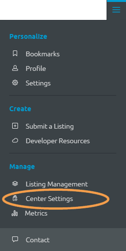

Manage Stewards
Stewards oversee listings in Center. They are the gatekeepers that approve, enable and moderate listings. There are two kinds of stewards: org stewards who oversee specific organizations and center stewards who oversee all listings and specific settings in the Center. At log-in, your system will determine your role as a user, org steward or center steward. When someone signs in as a steward, their name is added to the list of stewards in the Center Settings page:

Center stewards cannot add or delete stewards listed on the Stewards tab. However, they can edit the organizations assigned to each steward.
Access the steward settings:
- Click
 on the right-side of the Global Toolbar.
on the right-side of the Global Toolbar.
- Select Center Settings

- The Center Settings page will open to the Categories tab, click the Stewards tab.
Edit
To edit a steward's assigned organization(s):
- From the Stewards tab on the Center Settings page, click the Display Name that you want to edit.
- The Edit button in the table header will become active, click it.
- The Edit Steward window will open:
- To remove an organization, click Remove beside the Stewarded organizations drop-down field.
- To add an organization, click Add and select the new organization from the drop-down list.
- Click Save, the change will appear on the list of Stewards on the Center Settings page.